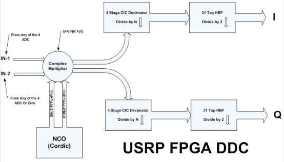
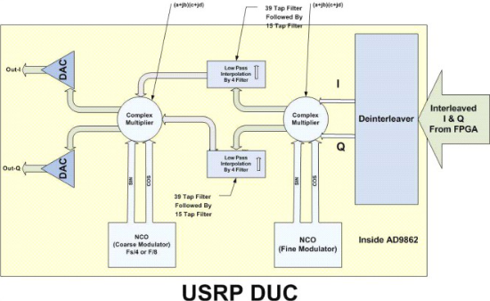
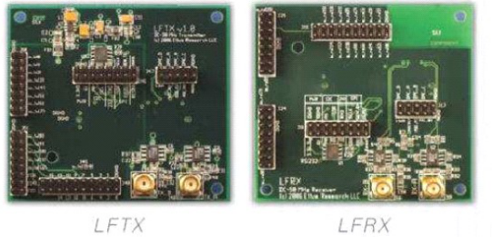
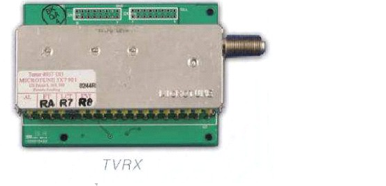

USRP 产品说明
一、USRP 的硬件架构
1、启动过程分析
USRP 是 Matt Ettus 的杰作，USRP 是一个非常灵活的 USB 设备，它把你的 PC 连接到 RF世界。
USRP 包含一个小的母板，母板包含 4 个 12bit /64M 抽样率的 ADC，4 个 14bit/128M DAC， 一个百万门的 FPGA 芯片和一个可编程的 USB2.0 控制器。
每个 USRP 母板支持 4 个子板，2 个接收，2 个发射。
RF 前端是实现在子板上的，不同的子板处理不同的频率带宽。作为业余无线电使用，可以 选择低能量的能够接收和发送 440MHZ 和 1.24GHZ 的子板。一个仅有接收功能的基于 cable modem 调谐的子板覆盖 50MHZ 到 800MHZ 频率范围，方便做电视信号接收的实验。
USRP 的灵活性得益于 2 个可编程的元件，通过他们和 PC 上的 host 端交互。为了对 USRP有一个初步印象，让我们看一下它的启动过程。
USRP 本身不含有 ROM，仅仅有一个存储 VendorID（供货商编号）和 productID（产品编号） 以及版本号信息的 EEPROM。当 USRP 插到 PC 的 USB 口上以后，主机上的程序通过 VID、PID 和版本号识别这是一个未配置的 USRP，主机上的程序第一步要做的是下载一个 8051 固件 USB 控制芯片上，这个固件控 USB 的行为。
当 USB 固件下载好后，USRP 模拟一个 USB 设备的重枚举过程，此后主机识别到一个不同 的设备 VID、PID 和版本号都不同了。现在这个 USB 固件定义 USB 端口、接口和用户自定 义命令。其中一个命令是 load FPGA ，收到这个命令后 USB 设备就能够把 FPGA 配置 bitstream 下载到 FPGA 芯片中开始工作。
FPGA 是一个通用硬件，它的行为完全由配置的 bitstream 来决定，你可以把 bitstream 看作 是一个目标码。这个 bitsteam 是由一个高级硬件描述语言 verilog 编译得到的，这些代码是 开源的，和其他的 GNU Radio 代码一样，完全遵循 GNU 的 GPL 协议。
2、数字中频——FPGA 的职责
简单的说，USRP 上的 FPGA 的职责就是做上下变频，在数字中频和基带信号之间进行转换。
FPGA 像一个小的、高性能的并行计算机一样，可以完成你设计的任务，设计 FPGA 需要一 些技能，并且如果不慎还会烧坏你的板子。还好我们已经提供一个标准的适应性很广的 FPGA 配置。
通过使用一个好的 USB 控制器，USRP 能够有 32M/s 的处理能力，USB 是半双工的，基于 你的需要，USB 能够在传输和接收之间转换。
在接收模式（receiver）下，标准的 FPGA 配置能够允许你选择你感兴趣的频率，同时完成 基带化和抽取滤波的工作。这里和 RF 前端处理方法是一样的，但现在做的是在数字域的采 样。执行这些功能的代码叫做数字下变频转换器 DDC，利用这些处理我们能够在数字域快 速的改变中心频率。
在发射模式（transmitter）下，执行一个完全反过来的过程。FPGA 包含多个数字上下变频 实例，根据需要这些实例连接到相同或者不同的 ADC 上面。鉴于篇幅较大，这里不能介绍 所有的理论，在 GNU Radio 的 wiki 上有更加多的信息可以参考。
二、USRP 的硬件平台
USRP（Universal Software Radio Peripheral，通用软件无线电外设）旨在使普通计算机能像 高带宽的软件无线电设备一样工作。从本质上讲，它充当了一个无线电通讯系统的数字基带 和中频部分。
USRP 背后的基本设计理念是在主机 CPU 上完成所有波形相关方面的处理，比如调制和解 调 。所有诸如数字上下变频、抽样和内插等高速通用操作都在 FPGA 上完成。
USRP 的真正价值是它能使工程师和设计师以低预算和最少的精力进行创造。 为数不少的开发者和用户贡献了大量的代码库，并为软件和硬件提供了许多实际应用。灵活的硬件、开源软件和拥有经验丰富用户社区群的强强联合，使它成为您软件无线电开发的理想平台。
1、USRP 母板
USRP 有 4 个高速模拟数字转换器（ADCs），每符号 12 比特， 64M 符号/秒。另有 4 个 高速数字模拟转换器（DACs），每符号 14 比特，128M 符号/秒。这 4 个输入和输出通道连 接到 Altera 出品的 Cyclone EP1C12 FPGA 上。FPGA 进而连接到 USB2.0 接口芯片 Cypress FX2，并接至计算机上。USRP 只通过高速 USB2.0 接口连接到计算机，这里不能使用 USB1.1 。
因此，原则上，如果使用实采样的话，有 4 个输入和 4 个输出通道。但是如果使用复采样（IQ），
可以有更大的灵活性（和带宽）。此时必须对它们进行配对，这样就能获得 2 复输入和 2个复输出。

1) 模数转换器部分
USRP 有 4 个高速的 12 位模数转换器。采样速率是每秒 64M 符号。从原则上讲，它可以作 为数字化 32MHz 带宽。AD 转换器可以带通滤波约达 200MHz 的采样信号。如果可以接受 几个分贝的损失，可以数字化高达 500MHz 的中频频率。然而，如果采样信号的中间频率 大于 32MHz，我们将引入量化噪声，实际的有用信号带宽被映射到-32MHz 和 32MHz 之间 。 有时候，这可能是有用的，例如，我们可以在没有任何射频前端的情况下收听调频广播电台。 被采样信号的频率越高，抖动带来的信噪比损失越多。建议上限为100MHz。
模数转换器的范围是 2V 峰峰值，输入是差分 50 欧姆。这就是 10mW 的功率 ，或 10dBm。 在 ADCs 之前有一个可编程增益放大器（PGA）用于放大输入信号，以便在输入信号较弱的 情况下使用到 ADCs 的整个输入范围。PGA 最大 20dB 。增益设置为零，最大输入为差分 2V 峰峰值。当设定为 20 分贝，只需要 0.2 V 峰峰值差分输入信号，便可达到最大范围。此 PGA 是可软件编程的。
如果信号是交流耦合的，在内部缓冲打开的情况下，没有必要提供直流偏置。
它将提供约 2V 的偏置。如果信号是直流耦合的，应给正负极同时提供一个 VCC/2（1.65V） 的直流偏置，而且要关闭内部缓冲区。ADC VREF 提供了一 个 1 伏参考电压。
2) 数模转换器部分
在传输路径上也有 4 个高速 14 位数模转换器。 DAC 时钟频率为 128 MS / s，所以奈奎斯特 频率为 64MHz 。然而我们可能会希望低于该频率以便易于滤波。一个有用的输出频率范围 是从 DC 到 44MHz。DACs 可为 50 欧姆或 10mW（10dBm）差分负载提供峰值 1V 的电压。 DAC 之后也使用了 PGA 用于提供高达 20dB 增益。PGA 是软件可编程的。DAC 信号（IOUTP_A /IOUTN_A 和 IOUTP_B /IOUTN_B）是电流输出的，每个介于 0 和 20 毫安之 间。它们可以通过一个电阻转换成差分电压。
3) 辅助模拟 I/O 端口
有 8 个辅助的模拟输入通道连接到 10 位低速 ADC 输入（标记为 AUX_ADC_A1_A， AUX_ADC_B1_A， AUX_ADC_A2_A，AUX_ADC_B2_A， AUX_ADC_A1_B， AUX_ADC_B1_B， AUX_ADC_A2_B，和 AUX_ADC_B2_B），它们可以被软件读取。这 些 ADCs 可以转换高达 1.25MS/S，其带宽约 200KHz。这些模拟通道可用于感知 RSSI 信号 水平，温度，偏置水平等等。
此外，有 8 个模拟输出通道连接 8 位低速 DAC 输出。 他们是 AUX_DAC_A_A ， AUX_DAC_B_A ， AUX_DAC_C_A ，AUX_DAC_A_B， AUX_DAC_B_B 和 AUX_DAC_C_B。这些 DACs 可用于提供各种控制电压， 如外部可变增益放大器控制。此 外，还有两个额外的 DACs（标记为 AUX_DAC_D_A 和 AUX_DAC_D_B），这是由 12 位 Sigma - Delta 调制器与外部简单的低通滤波器构成。
USRP 母板连接器（RXA 和 TXA）共享一组 4 个模拟输出通道（从 AUX_DAC_A_A 到AUX_DAC_D_A 用于 RXA 和 TXA ），每个有 2 个独立的模拟输入通道（AUX_ADC_A1_A 和 AUX_ADC_B1_A 用于 RXA 以及 AUX_ADC_A2_A 和 AUX_ADC_B2_A 用于 TXA ）。RXB 和 TXB 共用他们另外的独立的一组。如果必要，另 有 AUX_ADC_REF 可以提供增益设置的一个参考等级。
4) 辅助数字 I/O 端口
USRP 母板有一个高速 64 位数字 I/O 端口。这些被分为二组（32 位用于 IO_RX，32 位用于 IO_TX）。这些数字 I/O 引脚连接到子板接口连接器（RxA ，TxA，RxB 和 TxB）。所有这 些连接器有 16 位数字 I /O 位。这些信号可以由软件通过读/写特殊的 FPGA 寄存器来控制， 而且每个都可以被独立配置为数字输入或数字输出。
其中一些引脚来用于控制所安装子板上的特定操作，如控制选择接收射频输入的端口，在自 动发送/接收模式控制不同的 Tx 和 Rx 部件的供电电源，合成器锁定检测等。它也可被用 于实现 AGC 处理。当连接到逻辑分析仪时，它非常有助于 FPGA 上的调试。
5) FPGA
对 GNU Radio 用户来说，或许最重要的部分是理解 USRP FPGA 上所发生的事情。如下图 所示，所有的 ADCs 和 DACs 都连接到 FPGA。这块 FPGA 在 USRP 系统中起着关键作用。 基本上他们所做的是执行高带宽下的数学运算，并减少数据传输速率，使其至少可以在 USB2.0 上传送。FPGA 连接到 USB2 接口芯片 Cypress FX2。通过 USB2 总线，所有（FPGA 电路及 USB 微控制器都是可编程的。

标准 FPGA 配置包括由 4 级联积分梳状滤波器（CIC）实现的数字下变频器（DDC）。CIC 滤波器是只使用加法器和延时器的非常高性能的滤波器。对于频谱成形和带外信号抑制，也 有一个 31 抽头半带滤波器与 CIC 滤波器级联，形成完整的 DDC 状态。标准 FPGA 配置包 含 2 个完整的数字下变频器（DDC）。另有一种配置带 4 个 DDCs 但没有半带滤波器，从 而拥有 1、2 或 4 个不同的接收信道。
在 4 DDC 的实现中，我们在接收路径上有 4 个 ADCs 和 4 个 DDCs。每个 DDC 有两个输入 I 和 Q 。每个 ADCs 都可以连接到 4 个 DDCs 的任何一个的 I 或者 Q 支路的输入。这样 可以在同一个 ADC 采样流中有多种信道选择。
下图为 USRP 数字下变频器的框图。

现在，让我们看看数字下变频器（DDC）。首先，它把信号从中频波段转换到基带。第二， 它采样信号，使数据传输速率可以适应 USB2.0 以及计算机的计算能力。复输入信号（IF） 乘以固定频率（通常也是中频）指数信号。由此产生的信号也是复的，而且集中在 0 频。然 后，我们以因子 N 对信号进行抽样。
抽样可视为一个低通滤波器接一个下采样器。假设抽样因子是 N。如果我们看一下数字频谱， 低通滤波器挑出带宽[-Fs/N, Fs/N],，然后下采样器去掉了从[-Fs, Fs]到[-Fs/N, Fs/N]的频谱。 所以实际上我们已经以因子 N 缩小了有用数字信号的带宽。
关于带宽，我们可以在 USB 上保持 32MB/sec。USB 接口上发送的所有符号都是以 16 位有 符号整数组成的正交格式，比如 16 位 I 和 16 位 Q 数据（复信号）意味着每个复采样 4 字节。这导致 USB 上的符号速率为 8M 符号/秒（32MByte 每秒/4 字节）。由于使用复处理， 根据奈奎斯特准则，这将提供最大有效总频谱带宽约为8MHz。当然，我们可以通过改变采 样率选择更窄的范围。例如，假设我们要设计一个调频接收器，调频电台的带宽一般为200 kHz。因此，我们可以选择抽取因子为 250，则 USB 上的数据传输速率是 64MHz/250 = 256 kHz ，这非常适合 200kHz 的带宽而不会丢失任何频谱信息。抽样率必须在[8，256]之间 。 最后，复正交信号通过 USB 进入电脑。那就是软件的世界了！
请注意，当有多个信道时（最多 4 个），信道被交织。例如，4 信道时，USB 上的发送序列 将是 I0 Q0 I1 Q1 I2 Q2 I3 Q3 I0 Q0 I1 Q1……等等。在多个接收信道（1,2 或 4）情况下 ， 所有输入信道必须是相同的数据速率（即同样的抽样率） 。
发射路径上的情况几乎完全一样，除了它是依次反过来出现。我们要发送基带正交信号给 USRP 板子。数字上变频器（DUC ）将对信号进行内插，上变频到中频频段，并最终通过 DAC 发送。

传输端的数字上变频器（DUC）实际上是包含在 AD9862 CODEC 芯片里，而不是在 FPGA 里（如上图所示）。FPGA 上的唯一传输信号处理模块是 CIC 插值器。插值输出可发送到 4 个 CODEC 输入的任何一个。
在多发送信道（1 或 2）情况下，所有输出信道必须是相同的数据速率（即同一插值比例）。 请注意，发送速率可能不同于接收速率。USRP 可在全双工模式下工作。在这种模式下，发 送和接收端是完全独立的。唯一要考虑的是，总线上合并后的数据速率必须为 32MB/s 或更 低。
2、子板介绍
母板有四个插槽，可以插入 2 个基本接收子板和 2 个基本发送子板，或者 2 个 RFX 板子。 子板是用来装载 RF 接收接口或者调谐器和射频发射机的。有 2 个标注为 TXA 和 TXB 的插 槽用于连接 2 个发送子板，相应的，有 2 个标注为 RXA 和 RXB 的接收子板插槽。每个 子板插槽可以访问 4 个高速 AD/DA 转换器其中的 2 个（DAC 输出用于发送， ADC 输入用 于接收）。
这使得每个使用实（不是正交）采样的子板有 2 个独立的射频部分，和 2 个天线（整个系统一共有 4 个）。如果使用复正交采样，每个板子可支持一个单一的射频部分，整个系统一共 2 个。通常，我们可以看到每个子板有两个 SMA 连接器。我们通常会使用它们连接输入或 输出信号。USRP 母板上没有提供抗混叠或重建滤波器。这样可以在子板频率规划时获得最 大的灵活性。
每个子板有一个板载 I2C 的 EEPROM（24LC024 或 24LC025）使系统能够识别子板 。这 使得主机软件能够根据所安装的子板自动设置合适的系统。
EEPROM 也可以保存一些校准值比如直流偏置或者 IQ 不平衡(IQ unbalance)。如果这个 EEPROM 没有被编程，每次 USRP 软件运行时会打印出一个警告消息。
每个发送子板有一对差分模拟输出，其更新速率为 128MS/s。信号（IOUTP_A /IOUTN_A和 IOUTP_B / IOUTN_B）为电流输出。同样每个接收子板也有 2 个差分模拟输入 （VINP_A/VINN_A 和 VINP_B / VINN_B ），其抽样率为 64MS/s 。
1)Basic TX/RX 子板
1 MHz - 250 MHz 发射机和接收机。
BasicTX 和 BasicRX 用做外部射频前端的中频（IF）接口。ADC 输入和 DAC 输出直接变压 器耦合到 SMA 连接器（50 欧姆阻抗）而不通过混频器、滤波器或者放大器。

BasicTX 和 BasicRX 可以直接访问子板接口上的所有信号（包括 16 位数字 I/O，SPI 和 I2C 总线以及低速 ADC 和 DAC）。每个 Basic TX/RX 板子带有逻辑分析仪连接器用于 16 个通 用 IO。这些引脚可以通过访问内部信号来帮助您调试 FPGA 设计。
2) LF TX/RX 低频发射/接收子板

LFTX 和 LFRX 与 BasicTX 和 BasicRX 很相似，主要有两个不同，由于 LFTX 和 LFRX 使用 差分放大器而不是变压器，它们的频率响应可以达到直流。LFTX 和 LFRX 也有一个 30 MHz 低通滤波器用于抗锯齿化。
3)TVRX 子板

这是一个只有接收功能的子板。它是基于一个电视调谐器模块的完整的甚高频（VHF ）和 超高频（UHF ）接收系统。射频频率范围从 50MHz 到 860MHz，IF（中频）带宽为 6MHz。
所有的调谐和自动增益控制（AGC）功能可以通过软件控制。典型的噪声系数为 8dB。这是 唯一不支持 MIMO 的子板。
注：TVRX 是唯一不支持 MIMO（多输入多输出）的子板
4)DBSRX 子板

DBSRX 频率范围涵盖了许多知名波段，包括所有 GPS 和伽利略波段、902-928 MHz ISM 波 段、蜂窝和 PCS、氢和羟基射电天文学波段、DECT（Digital Enhanced Cordless Telecommunications, 数字增强型无绳电话通信 ）等更多波段。
5)RFX 系列子板
RFX 子板的主要特性如下：
• 1、30MHz 收发带宽
• 2、全同步设计，支持 MIMO
• 3、所有功能可由软件或 FPGA 控制
• 4、接收机和发射机的独立本地振荡器（LO）使其支持分频运行
• 5、小于 200 微秒锁相环锁定时间，可用于跳频 PLL（Phase Lock Loop，锁相环）
• 6、内置收/发开关
• 7、发射机和接收机使用同一连接器或使用辅助接收机端口
• 8、16 个数字 I/O 线来控制外部设备比如天线开关等
• 9、内置的模拟 RSSI（Received Signal Strength Indication 接收信号强度指示）测量
• 10、70 分贝的 AGC 范围
• 11、可调发射功率
• 12、支持全双工功能 （有某些限制）
RFX 系列子板有以下型号：
•WBX0510
频率范围：50 MHz-1 GHz
发射功率：100mW (20dBm)
WBX0510 的频率范围覆盖许多知名波段，包括广播电视、公共安全、陆地移动通信、低 功耗免许可设备、无线传感器网络、手机，以及五个业余无线电波段。
•RFX900
频率范围：750-1050 MHz
发射功率：200mW (23dBm)
RFX900 装配了一个 902-928MHz 的 ISM 波段滤波器用于过滤强的带外信号（如寻呼机）， 这个滤波器可以很容易的绕过，以便可在整个频率范围内使用，与除了 ISM 波段之外的 蜂窝、寻呼、motes 和双向无线电一起使用。
•RFX1200
频率范围：1150-1450 MHz 发射功率：200mW(23dBm) 覆盖导航、卫星和业余波段
•RFX1800
频率范围：1.5-2.1 GHz
发射功率：100mW(20dBm)
覆盖 DECT 、US-DECT 和 PCS 频段 （包括免许可波段）
•RFX2400
频率范围：2.3-2.9 GHz
发射功率：50mW(17dBm)
RFX2400 带有一个 ISM 波段（2400-2483MHz）附近的带通滤波器。该滤波器可被轻易 绕过以便覆盖全部频率范围。
•XCVR2450
频率范围：2.4-2.5 GHz 和 4.9-5.9 GHz
发射功率：100mW(20dBm)
XCVR2450 覆盖 2.4GHzISM 波段和整个 4.9-5.9GHz 波段，包括公共安全、 UNII（Unlicensed National Information Infrastructure，免许可国家信息基础设施）、ISM 和日本 无线波段。
三、电源
USRP 由 6V 4A 交流/直流电源转换器供电。该转换器能够在 90 -260VAC，50/60Hz 运作， 因此应可在任何国家使用。如果要使用其他电源，连接器是一种标准的 2.1mm/5.5mm 直 流电源连接器。USRP 主板本身只需要 5V 的电源， 但总体需要 6V 的电源为子板供电。 因为它提取约 1.6A 固定为 2 块子板供电。
可以通过观察 LED 的闪烁检查连接到 USRP 的电源。如果 LED 不闪烁，检查所有的电 源连接，并检查保险丝的连接（F501，靠近电源连接器的地方）。如果需要更换保险丝， 请注意保险丝的大小为 0603，额定电流 3 安培。
当首次上电，USRP 上的 LED 应闪烁约 3-4 次每秒。这表明，处理器正在运行，并把设备 置于低功耗模式。一旦固件下载到 USRP，LED 的闪烁速度将放慢。
四、注意事项
时钟同步问题
整个收发器链拥有一个同步的时钟，可以建立 MIMO 系统，智能天线，相控阵和干涉仪。 以下是一些如何使用它的注意事项。
1)同步所有子板本地晶振
如果您的系统有多个子板并希望得到相干相位，根据你的子板，你得采取这些步骤：
•BasicRX， BasicTX， LFRX， LFTX
这些板子没有本地晶振，所以没有必要。如果客户有自己的外部射频部分，只能靠客户自 己来实现同步。
•TVRX -TVRX 不适合同步的多天线应用。
TVRX有自己的振荡器。没有办法使这些板相位相干。
•DBSRX
DBSRX 始终使用主 USRP 时钟，因此它始终是相位相干的。
•Flex400 ， Flex900 ， Flex2400
如果是 USRP 版本 Rev 4 的板子，要修改这些板子才能用于相干应用（最近的板子不需要 这些改动，只有早期的 RFX 板需要）
1.移动 R64 到 R84 ， 移动 R142 到 R153 。这将禁用子板时钟
2.移动 R35 到 R36 ， 移动 R117 到 R115 。
4.把板子插进 USRP 的 A 侧并执行下列命令之一以重编 dboard 的 EEPROM ：
usrp/host/apps/burn-db-eeprom -A -t flex_400_mimo_b --force
usrp/host/apps/burn-db-eeprom -A -t flex_900_mimo_b --force
usrp/host/apps/burn-db-eeprom -A -t flex_2400_mimo_b --force
2)同步多个 USRP
为了有效地同步多个 USRP 板，有两个因素需要考虑：时钟同步（这是下面要详细列出的）； 板间符号的匹配。
在多个 USRP 之间同步时钟，必须把它们转换为使用一个共同的参考时钟。操作如下：
•USRP 版本 4
USRP 版本 4 引入一些改进，可以使一个板子作为主时钟，所有其他板子作为从属。 主时钟板子：
a) 焊一个 SMA 连接器到 J2002。这是主时钟输出。焊 SMA 连接器时要 小心，不要破坏了从 J2002 以 R2028 的微细连接。请注意，一旦焊上 了，您将无法在 RXB 插槽上插 TVRX 了。
从板：
a) 焊一个 SMA 连接器到 J200 。这是时钟输入。焊 SMA 连接器时要小心， 不要破坏了从 J2001 以 C927 的微细连接。
b) 移动 R2029 到 R2030。这将禁用板载时钟。R2029/R2030 是一个 0 欧姆 的电阻。
c) 移动 C925 到 C926。 d) 移除 C924。
e) 如果您想串联另一个 USRP 板子到这个上，您可以使用 J2002以提供时钟输出